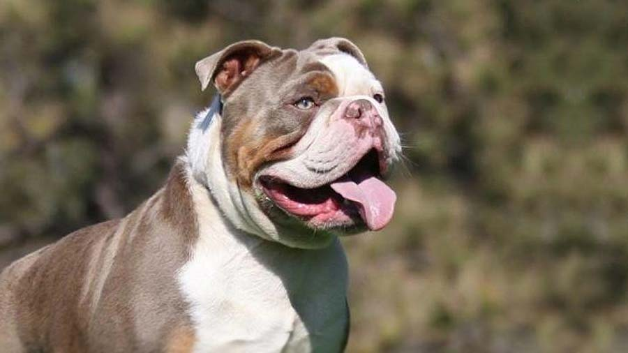
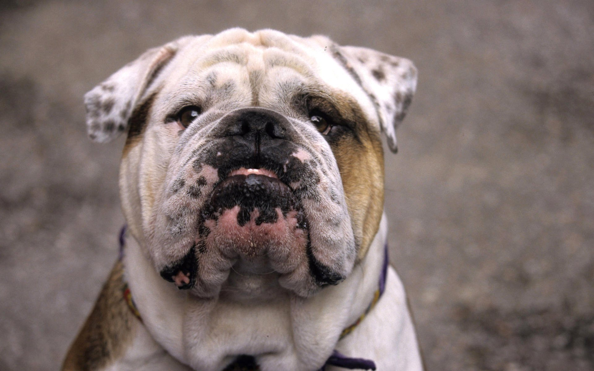
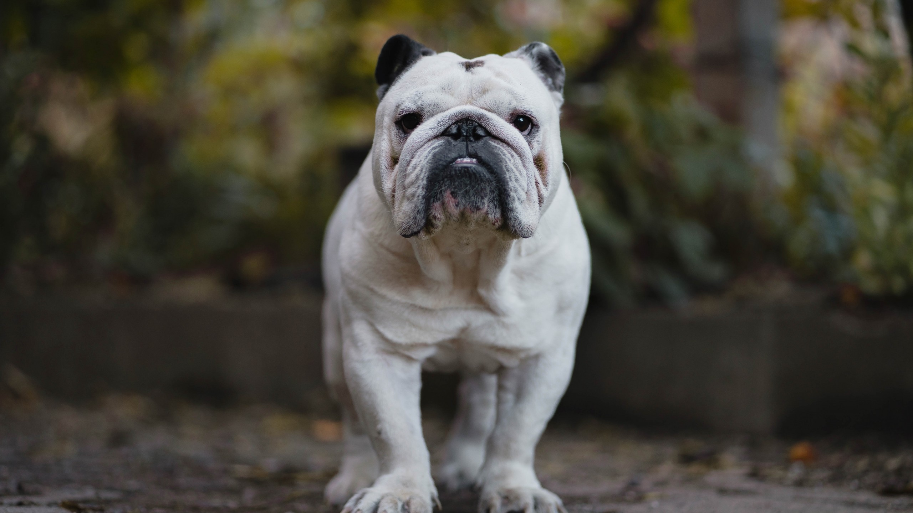
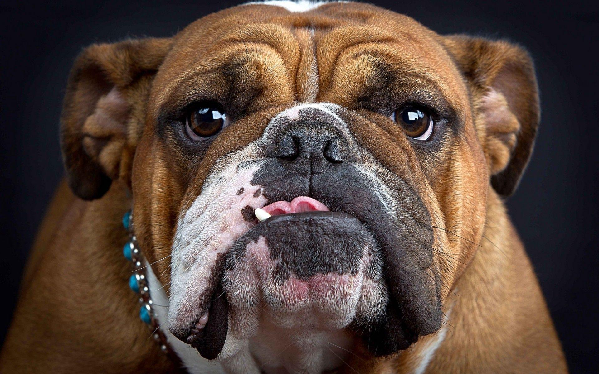

Olde English Bulldogge

origin
United States
size
Medium
color
Others
type
Purebred
breed group
Guardian Dogs (UKC)
character
Best guard
temperament
Alert
Confident
Courageous
height
17-20 inches (43-51 cm)
weight
60-80 pounds (27-36 kg)
geography
North America
overview
The Olde English Bulldogge is a muscular, medium-sized dog of great strength, and possesser of fluid, agile movement. He is well balanced and proportioned, while appearing capable of performing without any breathing restrictions in either heat or in cold. Serious Faults: Excessive wrinkle, lack of pigment around eyes, nose or mouth.
history
In 1971 a breeding project began using a linebreeding scheme developed by Dr. Fechimer of Ohio State to rapidly achieve a purebred dog. The goal of this project was to return the bulldog to the appearance of the “Regency-Period” bulldog, now named the Olde English Bulldogge (OEB) to clearly differentiate the new breed from the modern English Bulldog. Today’s Olde English Bulldogge matches the looks of the bull baiting dog of the early 1800’s.
They are, first and foremost, excellent companions, while also possessing the drive, temperament and agility to perform in numerous working venues as well as being service dogs. The revival of a healthy dog with the longevity to live well into its teens is a primary goal. The Olde English Bulldogge was recognized by the United Kennel Club on January 1, 2014.
Photo Gallery


